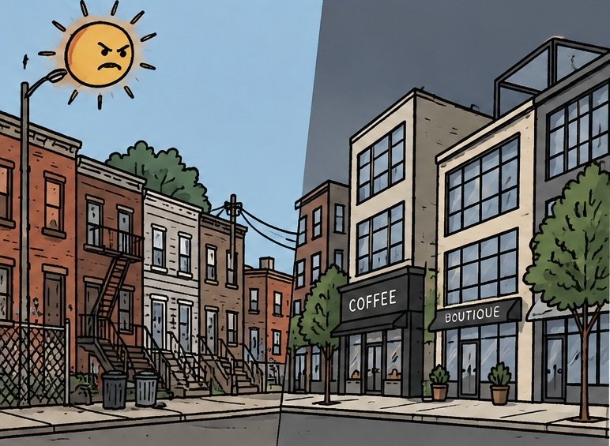

A visual investigation
Then & now
A neighborhood can change, but its history does not disappear. Through historical and present-day photographs, this project explores how gentrification has transformed Williamsburg, the Latino community, highlighting the culture, local businesses, and community memories connected to these streets.
Compare the photographs
REFLECTIVE QUESTION What is lost when a neighborhood changes to accommodate wealthier residents and new businesses?
01 — Then / Now
Same place.
Different moment
Historical photographs beside present-day views can reveal what has changed, what remains, and what deserves to be remembered.
02 — Resistance
Seguimo' Aquí!
Latino-owned restaurants that continue to thrive despite the pressures of gentrification. Through their food, cultural traditions, and community connections, these businesses help preserve Williamsburg’s Latino identity and keep its history alive.
03 — About this project
Keeping the story visible
My name is Pedro Troncoso, and I am Dominican. My connection to this project comes from my own experience with displacement and the way it can change a person's relationship with their neighborhood. I grew up watching my family sell our house to Plaza Lama, a supermarket company in the Dominican Republic. The house was later demolished to make room for one of its branches, built on land that had been part of Parque Central in La Romana, my province.
After that, I experienced what it meant to lose a place that was part of my everyday life. I could no longer play with my old friends in the same way or visit my favorite colmado to buy my snacks. These might seem like small things, but they were part of my childhood and the person I was becoming. Losing that familiar environment felt like losing a part of myself.
Since then, I have come to understand that our identity is shaped not only by who we are, but also by the places and people around us. Our neighbors influence how we think, act, and relate to others, while our homes give us a place to express ourselves, create memories, and feel that we belong. The places where we grow up become part of our stories.
When people are forced to leave their homes in search of a better life or because they can no longer afford to stay, they may leave behind more than a house. They can also lose their history, their community, their routines, and their connection to the place they once called home.
For this reason, I decided to focus this project on the people whose lives have been affected by gentrification. I chose to explore Williamsburg, Brooklyn, a neighborhood that has experienced significant changes over time, by examining its geographic transformation through historical and present-day photographs. I want to bring attention to the stories of people who have lost their homes, as well as those who continue to live in the neighborhood and witness these changes.
Through this project, I hope to help preserve the history of these communities and raise awareness of what gentrification can leave behind: divided neighborhoods, destroyed homes and familiar places, disappearing local businesses, and memories that risk being forgotten. For me, keeping these stories visible is a way of recognizing that a neighborhood is more than the buildings that stand there. It is the people, experiences, and connections that give it meaning.